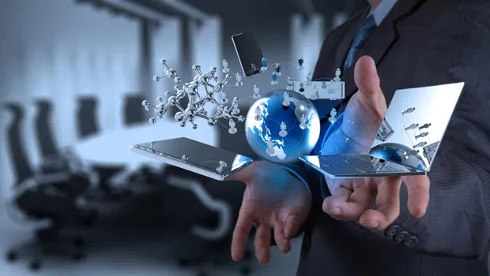

Dampak Positif Perkembangan Teknologi Informasi dan Komunikasi di Era Digital
 21 Maret 2022 Views : 1,127,767Di masa ini perkembangan informasi dan komunikasi berjalan semakin pesat. Saat ini sendiri sudah banyak hal yang bisa kita lakukan dengan sangat mudah dan praktis tanpa harus membuang banyak waktu.
Hanya berbekal satu alat canggih, yakni smartphone atau ponsel pintar, kini kita sudah bisa melakukan banyak hal. Mulai dari memanfaatnya sebagai media komunikasi, menggunakannya untuk mencari informasi lewat internet, bahkan digunakan untuk mendapat berbagai layanan dari instansi tertentu.
Dibandingkan dengan beberapa tahun lalu, perkembangan informasi dan komunikasi yang semakin canggih di Indonesia tersebut dinilai membawa banyak hal positif. Pasalnya, sekarang ini sudah banyak layanan yang bisa diakses secara digital lewat jarak jauh. Misalnya saja memanfaatkan layanan e-commerce untuk berbelanja secara online, layanan tiket hotel/transportasi online, ataupun layanan online lainnya yang bisa masyarakat manfaatkan dengan sebaik mungkin.
► Dampak Positif Perkembangan Teknologi Informasi dan Komunikasi
Jika kita simpulkan, maka perkembangan teknologi informasi dan komunikasi yang canggih di era digital saat ini dapat menghasilkan dampak-dampak positif seperti berikut:
1.Memberi kemudahan untuk mendapatkan layanan tertentu lewat jarak jauh, misalnya berbelanja online, pesan tiket kereta online, dll.
2.Menghemat waktu, bisa dilakukan kapanpun dan dimanapun.
3.Kemudahan untuk mencari dan mendapat informasi lewat akses internet.
4.Dapat dijadikan sarana hiburan, misalnya mengakses sosial media ataupun steaming film dan musik.
Meskipun memiliki banyak dampak baik, namun perkembangnya teknologi informasi dan komunikasi juga dapat menyebabkan dampak buruk, misalnya saja seperti memunculkan peredaran informasi bohong (hoax) atau penyalahgunaan Media Sosial untuk sesuatu yang kurang baik. Oleh sebab itu, masyarakat dianjurkan untuk tetap bersikap bijak dalam memanfaatkan teknologi yang sudah ada ya!